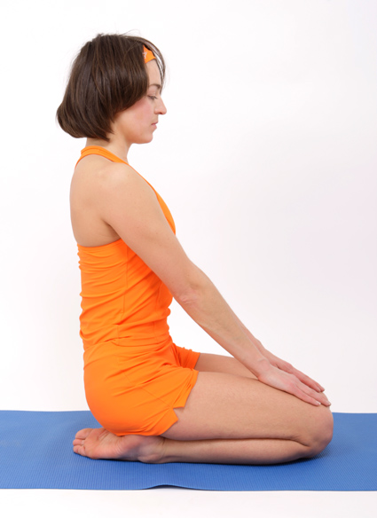

Полное дыхание
Полное йоговское дыхание поможет вам снять усталость и «невыспаноость».

Увеличит потенциал ваших легких, поможет вывести мокроту, снять застойные явления, поможет снять астматический спазм, успокоит работу сердца, освежит кровь.
При освоении полного дыхания, вы учитесь быть внимательными к работе легких, уровню кислорода и углекислого газа в крови. Это поможет вам вовремя определять причины плохого самочувствия и устранять их при помощи полноценного дыхания.
Устанавливает, с какой стороны элемента запрещено его обтекание другими элементами. Если задано обтекание элемента с помощью свойства float, то clear отменяет его действие для указанных сторон.